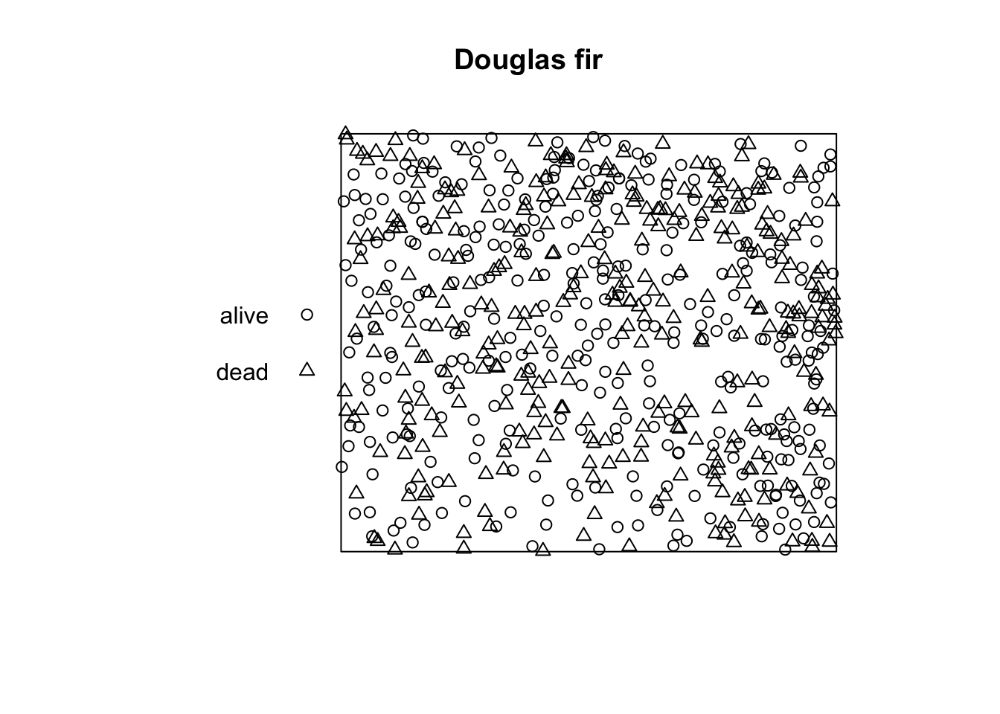
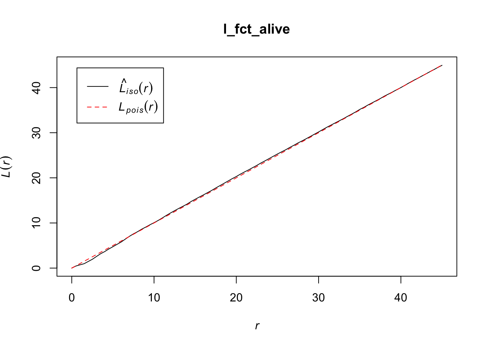
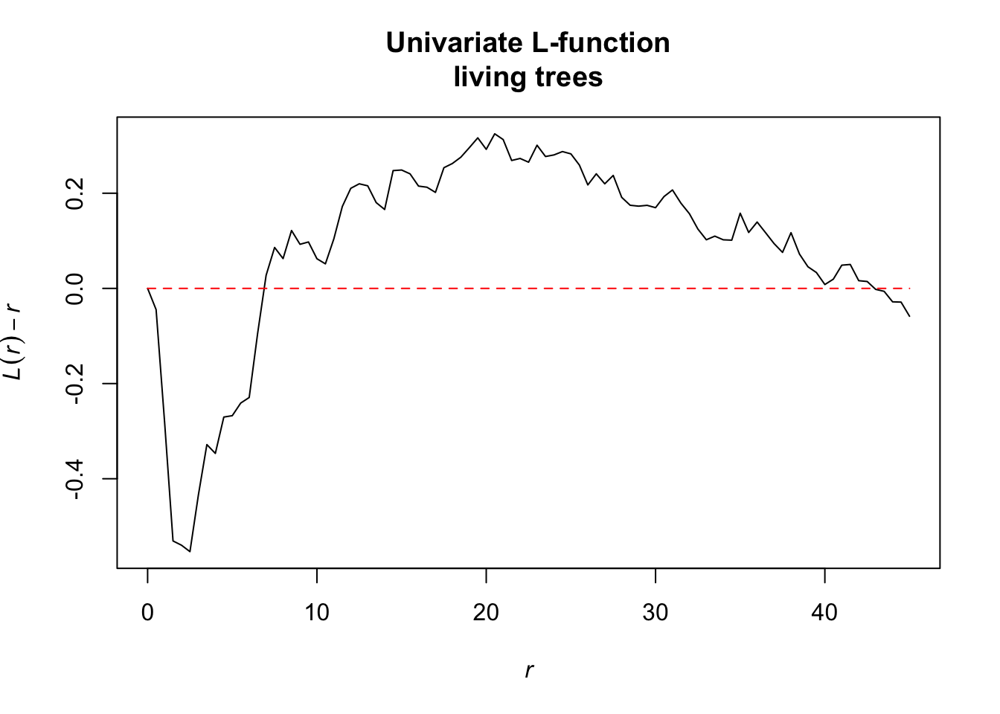
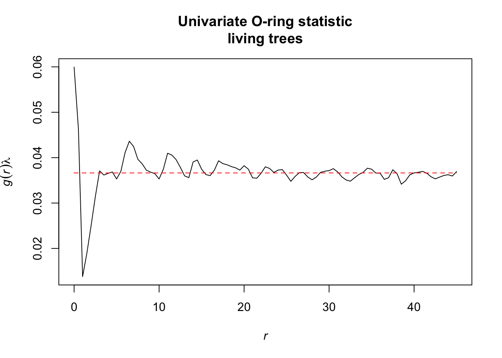
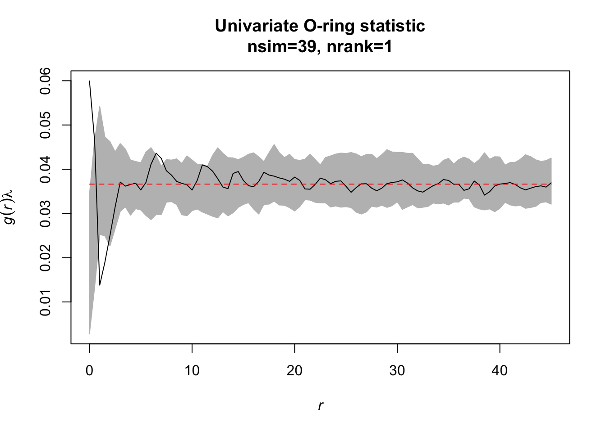
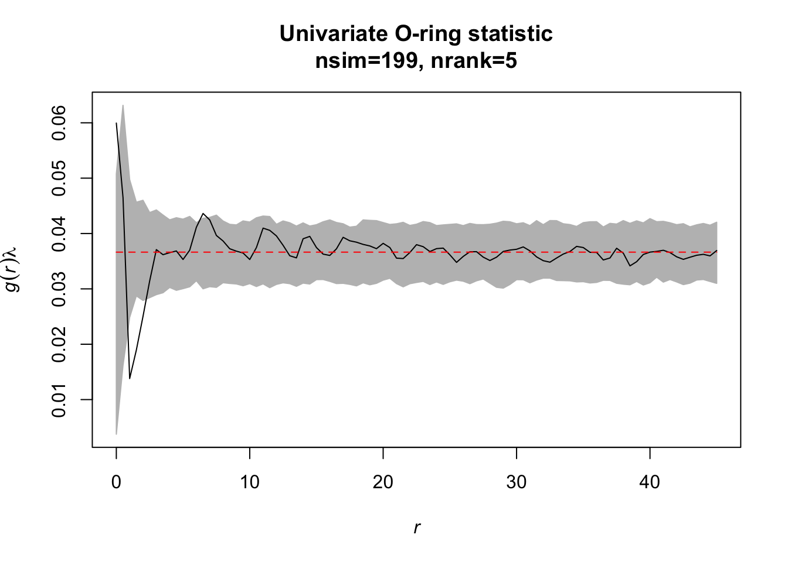
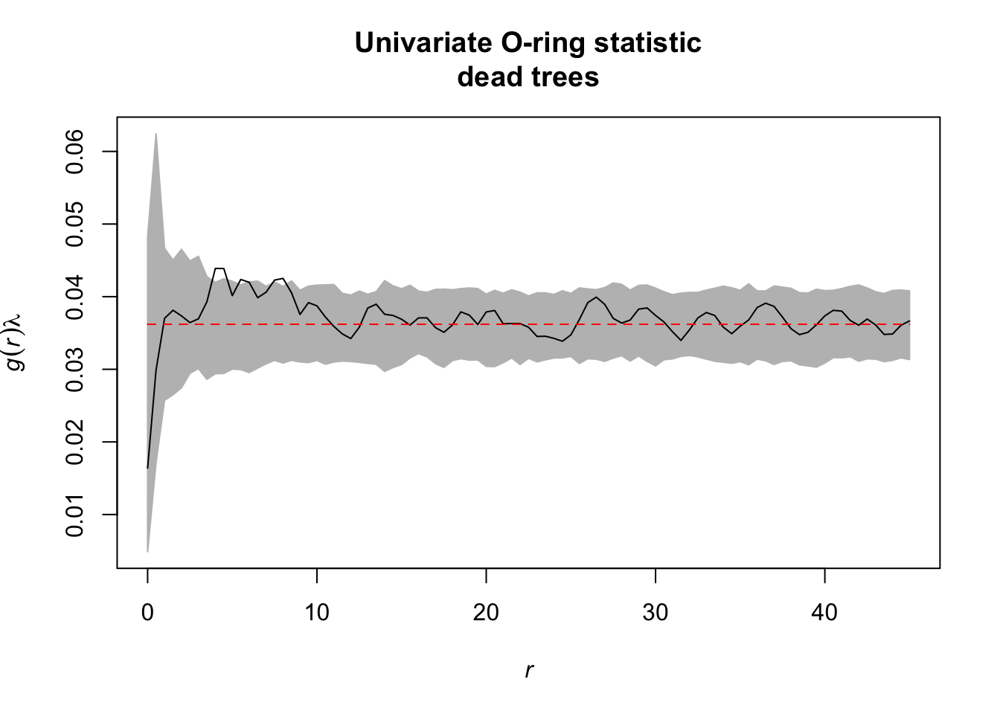
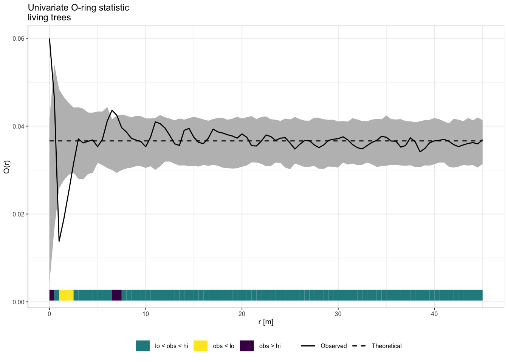

First, we need to import the spatstat package for analyzing spatial point patterns. Also, we import the tidyverse package, a collection of R packages designed for data science.
library(spatstat)
library(tidyverse)If you don’t have the packages already installed, run the following code in order to install them.
install.packages(c("spatstat", "tidyverse"))Task: Using the data set DouglasFir_LiveDead_OGN.dat, calculate the O-ring statistic and the L-function. Here, pattern 1 gives the locations of living trees and pattern 2 gives the locations of dead trees. Comparing the univariate measures \(O_{11}(r)\) and \(L_{11}(r)\), how do they differ?
First, we need to import the data using read_delim() (make sure the data is in your working direction. See ?getwd()/?setwd() for help). The columns are separated by a semicolon. By using read_delim(), the class of the data is automatically a tibble (an ‘advanced’ version of a data.frame. For more information see ?tibble).
douglas_fir <- read_delim(file = "Data/DouglasFir_LiveDead_OGN.txt",
delim = ";")
class(douglas_fir)
## [1] "spec_tbl_df" "tbl_df" "tbl" "data.frame"Print the data. The tibble contains 668 rows (one for each tree) and 3 columns (x-coordinate, y-coordinate and the marks).
print(douglas_fir, collapse = TRUE)## # A tibble: 668 x 3
## x y mark
## <dbl> <dbl> <dbl>
## 1 69.9 43.9 1
## 2 10.2 60.1 1
## 3 50.4 25.5 1
## 4 40.1 1.03 1
## 5 40.7 15.7 1
## 6 54.2 0.382 1
## 7 41.8 46.3 1
## 8 59.8 28.0 1
## 9 75.7 69.2 1
## 10 48.6 14.1 1
## # … with 658 more rowsWe want to edit the column ‘mark’ in a way that 1 == ‘alive’ and 2 == ‘dead’. We are using two functions of the dplyr package. mutate() creates a new column (actually we overwrite the already existing column ‘mark’) and case_when() classifies the data. Lastly, we convert the column as factors.
douglas_fir <- mutate(douglas_fir,
mark = case_when(mark == 1 ~ "alive",
mark == 2 ~ "dead"),
mark = as.factor(mark))Now, we need to convert the tibble to the ppp class of the spatstat packages. Firstly, using ripras(), we need to specify our plot area (spatstat calls this observation window). The function calculates a window based on the provided x- and y-coordinates (the results is returned as a owin object). We can specify the shape of the window using the shape argument. Secondly, we convert the tibble to a ppp. The tibble contains the coordinates and the marks as columns and we just need additionally to specify the observation window using the just created owin object.
Plotting the pattern to control it is always a good idea. The plot function automatically modifies the points according to their mark. Also the summary() function returns many helpful information about the point pattern. The functions returns the intensity, information about the marks (in this case the frequencies, proportions and intensities of the discrete classes) and information about the plot area.
plot_area <- ripras(x = douglas_fir$x, y = douglas_fir$y,
shape = "rectangle")
douglas_fir_ppp <- as.ppp(X = douglas_fir, W = plot_area)
summary(douglas_fir_ppp)
## Marked planar point pattern: 668 points
## Average intensity 0.07283247 points per square unit
##
## Coordinates are given to 3 decimal places
## i.e. rounded to the nearest multiple of 0.001 units
##
## Multitype:
## frequency proportion intensity
## alive 336 0.502994 0.03663430
## dead 332 0.497006 0.03619817
##
## Window: rectangle = [-0.12483, 104.12783] x [-0.1185, 87.8575] units
## (104.3 x 87.98 units)
## Window area = 9171.73 square units
spatstat provides most summary functions for spatial point pattern analysis (see e.g. ?Kest()). The result is always a fv object (function value). Almost all summary functions allow you to specify the edge correction (correction) and the distances r (r). But first, we subset the data because we want only to use the ‘alive’ trees at the moment.
alive <- subset(douglas_fir_ppp, marks == "alive")
l_fct_alive <- Lest(X = alive, correction = "Ripley",
r = seq(from = 0, to = 45, by = 0.5))
class(l_fct_alive)
## [1] "fv" "data.frame"
However, as you can see in the plot, Besag’s L-function is not centered to 0. Also, the O-ring statistic is not available in spatstat. Therefore, we need to write our own functions. For that, eval.fv() is quite handy. The function evaluates expression involving one or more fv objects (divisor = "d" is just a little trick to improve the bias of the estimator when r is close to zero).
Lest.cent <- function(input, correction = "Ripley", r = NULL, ...){
l_fct <- Lest(input, correction = correction, r = r, ...)
r <- l_fct$r
eval.fv(l_fct - r)
}
Oest <- function(input, r = NULL,
correction = "Ripley", divisor = "d", ...){
p_fct <- pcf.ppp(input, r = r,
correction = correction, divisor = divisor, ...)
lambda <- intensity(unmark(input))
eval.fv(p_fct * lambda)
}Now, we can calculate the summary functions and plot them.
l_function <- Lest.cent(input = alive,
r = seq(from = 0, to = 45, by = 0.5))
oring_statistic <- Oest(input = alive,
r = seq(from = 0, to = 45, by = 0.5))
Alternatively, these functions are already implemented in the onpoint package, a small collection of utility functions based on spatstat. The package is only hosted on GitHub. To install onpoint, you need the devtools package. In case you don’t have devtools installed yet, do it as before and simply use install_github(repo = "r-spatialecology/onpoint").
library(onpoint)
l_function <- center_l_function(x = alive,
r = seq(from = 0, to = 45, by = 0.5))
oring_statistic <- estimate_o_ring(x = alive,
r = seq(from = 0, to = 45,
by = 0.5))Task: Redo the analysis but now with simulation envelopes. How does the simulation envelope change if you change the settings for the envelope from # simulations=39/‘lowest/highest’=1 to simulations=199/‘lowest/highest’=5.
The function envelope of the spatstat package calculates simulation envelopes. The number of simulations can be specified with the argument nsim, the lowest/highest values with the argument rank. When not specified otherwise, the functions uses ‘CSR’ as null model. The fun argument can handle any summary function that spatstat provides (or the ones we implemented as long as they return a fv object).
simulation_envelope_39 <- envelope(Y = alive, fun = Oest,
r = seq(from = 0, to = 45,
by = 0.5),
nsim = 39, nrank = 1)
simulation_envelope_199 <- envelope(Y = alive, fun = Oest,
r = seq(from = 0, to = 45,
by = 0.5),
nsim = 199, nrank = 5)
Task: Also look at the functions O22(r) and L22(r). Is there a striking difference between dead and alive Douglas fir trees?
So this time, we want to subset all ‘dead’ trees.
dead <- subset(douglas_fir_ppp, marks == "dead")
simulation_envelope_dead <- envelope(Y = dead, fun = Oest,
r = seq(from = 0, to = 45,
by = 0.5),
nsim = 199, nrank = 5)
onpoint also provides a plotting function for envelope objects. Similar to spatstat, the simulation envelopes as well as the observed value are included, however, so-called ‘quantum bars’ indicate the location of the observed value in relation to the envelopes.
plot_quantums(simulation_envelope_199,
xlab = "r [m]", ylab = "O(r)",
title = "Univariate O-ring statistic\nliving trees",
base_size = 7.5)
References:
Baddeley, A., Rubak, E., Turner, R., 2015. Spatial point patterns: Methodology and applications with R. Chapman and Hall/CRC Press, London.
Getzin, S., Dean, C., He, F., Trofymow, J.A., Wiegand, K., Wiegand, T., 2006. Spatial patterns and competition of tree species in a Douglas fir chronosequence on Vancouver Island. Ecography, 29, 671-682.
Getzin, S., Wiegand, T., Wiegand, K., He, F., 2008. Heterogeneity influences spatial patterns and demographics in forest stands. J. Ecol. 96, 807-820.